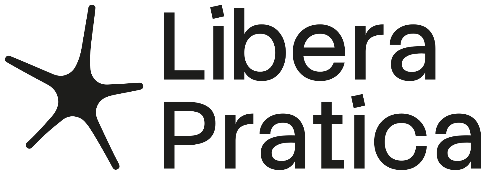
Sabir, cittadino di
questo mare. Bono viaggio — sei giunto al porto di Ancona.
Il tuo sigillo
Mira la mappa e scegli dove attraccare. Ti basta una tappa per ciascuna delle quattro aree: punta sulla varietà!
Percorsi vicino a te
Andara per le vie. Le rotte più vicine partono a un passo da te.
Spettar e capire — l'attesa raccontata da chi la costruì.
Andara in alto — dal parco al colle, dove la città respira.
Servir il porto — raccontato da chi lo ha cantato.
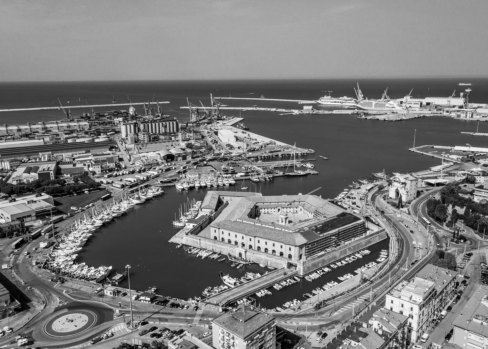
Per l'ammissione non serve correre. Andara per Ancona e tocca le quattro aree: il resto è libero.
I dati della tua ammissione, lasciati all'approdo. Sono la tua identità temporanea in città: puoi aggiornarli in qualsiasi momento.
Itinerari curati tra mare, città e parco. Andara con una voce, a tuo ritmo.
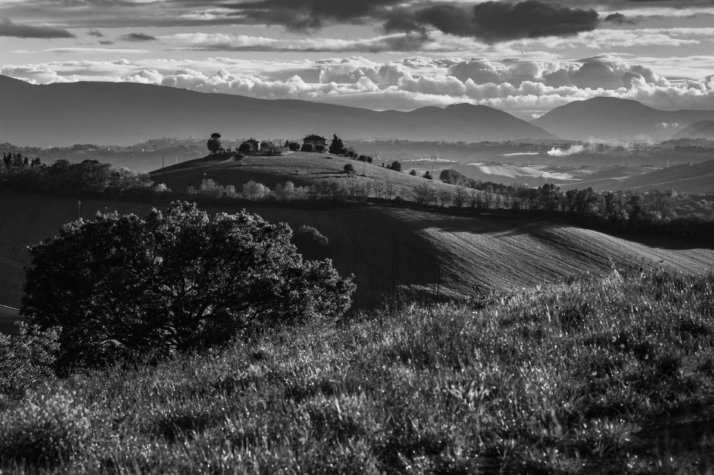
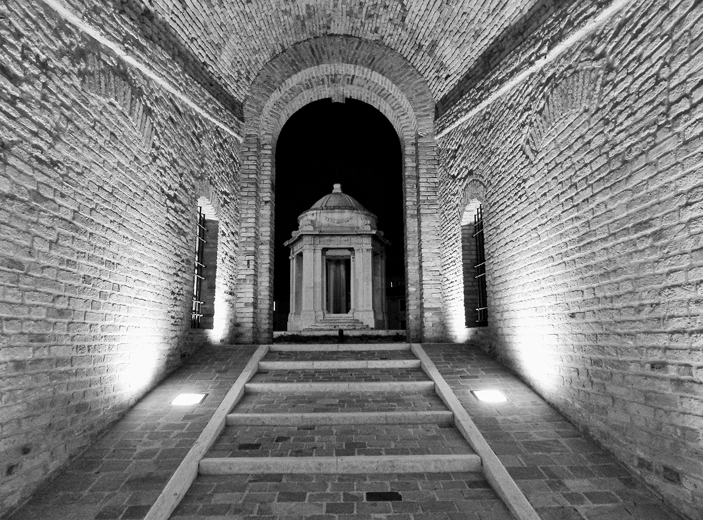
Andara dove vuoi: luoghi ed eventi delle quattro aree, in quattro colori.
Attracchi registrati
Se il GPS non rileva il tuo attracco, registralo a mano qui sotto. Funziona solo se sei vicino al luogo.
Un solo varco per percorsi, eventi e luoghi. Qui la danara serve solo al viaggio: la Libera Pratica non si compra.
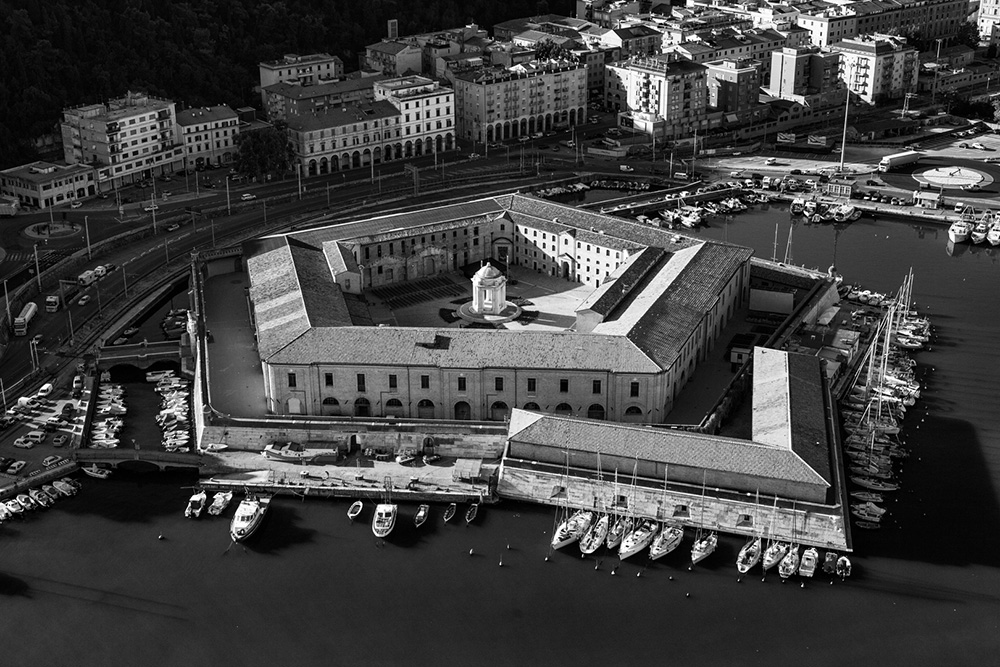
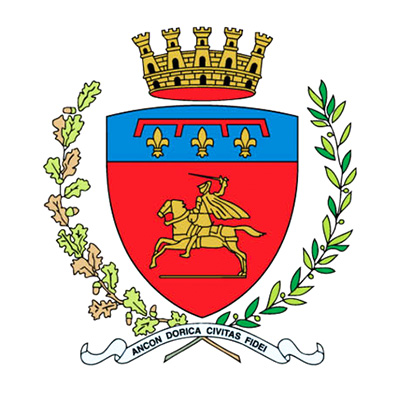
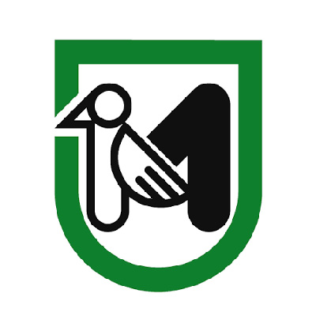
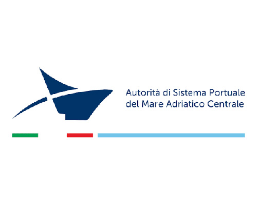
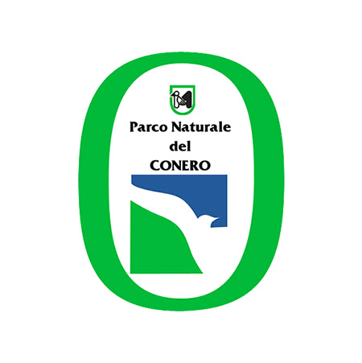
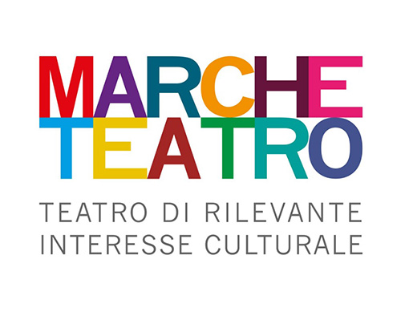
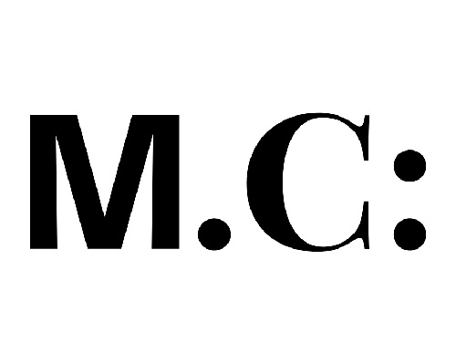
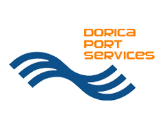
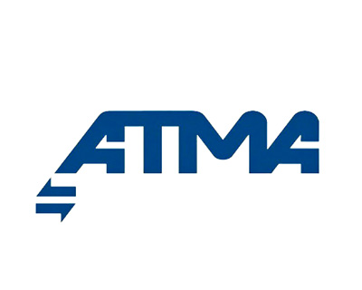
Ti serve un attracco in ognuna delle quattro aree. Spettar ancora un po': l'ammissione è vicina.
Porto di Ancona · MMXXVIII
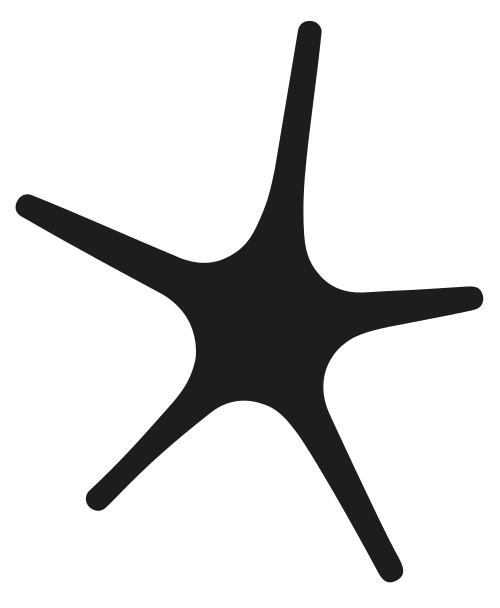
Rilasciata il 21 ottobre 2028
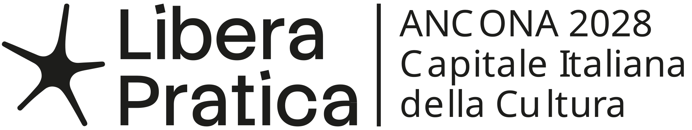
In quale area hai attraccato?
Venir. Prima di scender a terra, serve qualche dato per l'ammissione.